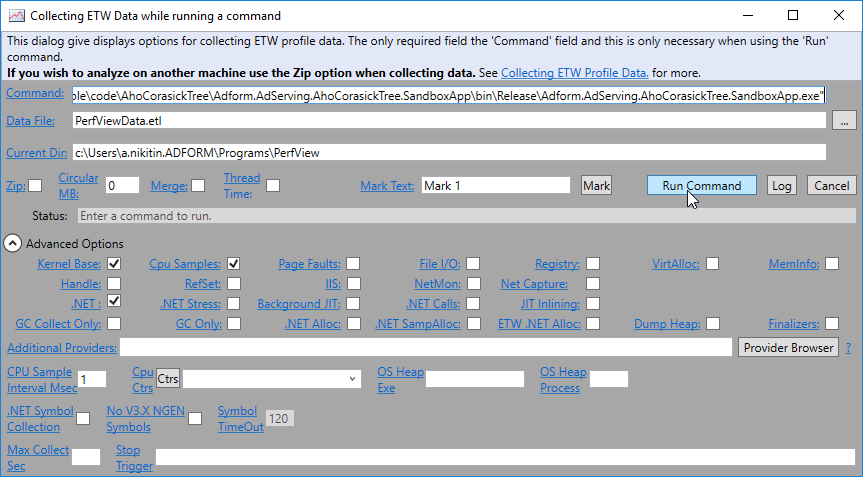
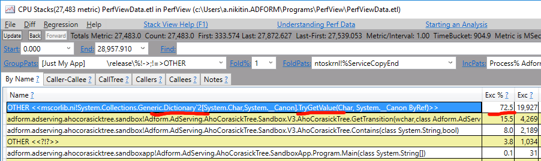
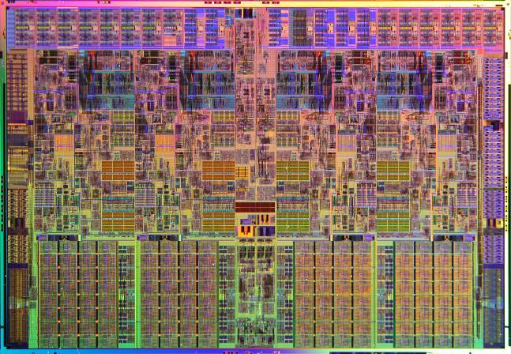
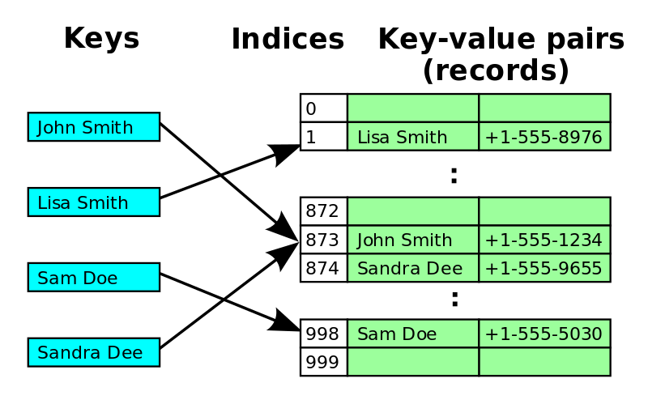
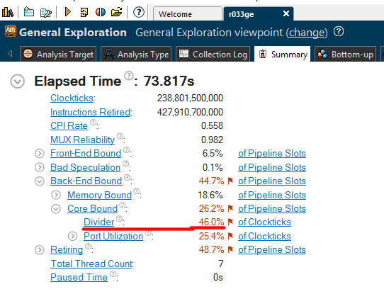
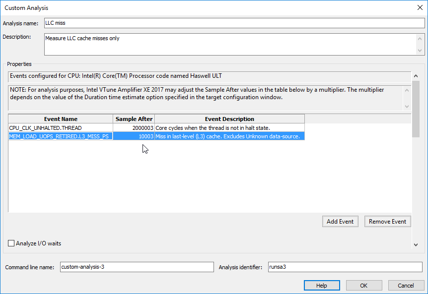

High-performance .NET by example:
Filtering bot traffic
NET Meetup #22 Minsk 2017
About me:
Software Engineer @Adform
@nikitin_a_a
https://github.com/alexandrnikitin/
https://alexandrnikitin.github.io/blog/
Overview
- Domain
- Measure, measure, measure!
- Algorithm
- Tools
- Performance optimizations
Domain
All websites receive bot traffic!
The bot classification
- White bots (good) - search engine bots like Google, Bing or DuckDuckGo.
- Grey bots (neutral) - feed fetchers, website crawlers and data scrappers.
- Black bots (harmful) - fraud and criminal activity, intentional impersonation for profit.
Ways to identify:
- Technical info
- Behavior analysis
- Honeypots
The Interactive Advertising Bureau (IAB)
- advertising business organization
- develops industry standards
- Do Not Track and Internet Explorer
- 3rd party cookies in Firefox
- Adblock Plus and IAB summit
IAB International Spiders and Bots List
Pricing:
IAB General Member: $4 000
IAB Associate Member: $7 000
Non-Member: $14 000
The list “is required for compliance to the IAB’s Client Side Counting (CSC) Measurement Guidelines”
Simplified content
googlebot
bingbot
twitterbot
duckduckbot
curl
Measure, measure, measure!
“If you can not measure it, you can not improve it.”
Lord Kelvin
Microbenchmarking DOs DON’Ts from Microsoft:
- DO use a microbenchmark when you have an isolated piece of code whose performance you want to analyze.
- DO NOT use a microbenchmark for code that has non-deterministic dependences (e.g. network calls, file I/O etc.)
- DO run all performance testing against retail optimized builds.
- DO run many iterations of the code in question to filter out noise.
- DO minimize the effects of other applications on the performance of the microbenchmark by closing as many unnecessary applications as possible.
Development pipeline:
A feature -> C# code
C# code + Compiler -> IL assembly
IL assembly + BCL + 3rdParty libs -> Application
Application + CLR -> ASM
ASM + CPU -> Result
Variety of implementations:
C# Compilers: Legacy, Roslyn, Mono
IL Compilation: JIT, NGen, MPGO, .NET Native, LLVM
JITs: Legacy x86/ x64, RyuJIT, Mono
CLRs: CLR2, CLR4, CoreCLR, Mono
GCs: Microsoft GC (few modes), Boehm, Sgen
OSes: Windows, Linux, OS X
Hardware: ...
Algorithm
Multiple string/ pattern matching problem
- anti-virus software
- network security
- biology and DNA
- spam detection
- plagiarism detection
String searching algorithms:
- Naive
- Finite-state automation
- Aho–Corasick
- Boyer-Moore & Commentz-Walter
- Backward Oracle Matching & Set-BOM
- Rabin–Karp
Key features of the Aho–Corasick algorithm:
- a pattern matching algorithm
- accepts a finite set of patterns
- matches all patterns simultaneously
- backed by a Trie
- “failure” links between nodes
An animated version
http://blog.ivank.net/aho-corasick-algorithm-in-as3.html
Tools
BenchmarkDotNet
http://benchmarkdotnet.org/
Alternatives: xunit.performance, NBench
ILSpy
https://github.com/icsharpcode/ILSpy
Alternatives: ildasm, dotPeek, Just Decompile, dnSpy
PerfView
https://github.com/Microsoft/perfview
WinDbg
http://www.windbg.org/
Intel VTune Amplifier
https://software.intel.com/en-us/intel-vtune-amplifier-xe
Performance optimizations
The code
public class AhoCorasickTree
{
internal AhoCorasickTreeNode Root { get; set; }
public AhoCorasickTree(IEnumerable<string> keywords) { ... }
public bool Contains(string text) { ... }
}
internal class AhoCorasickTreeNode
{
public char Value { get; private set; }
public AhoCorasickTreeNode Failure { get; set; }
private readonly Dictionary<char, AhoCorasickTreeNode> _transitionsDictionary;
}
public bool Contains(string text) { return Contains(text, false); }
private bool Contains(string text, bool onlyStarts)
{
var pointer = Root;
foreach (var c in text)
{
var transition = GetTransition(c, ref pointer);
if (transition != null)
pointer = transition;
else if (onlyStarts)
return false;
if (pointer.Results.Any())
return true;
}
return false;
}
private AhoCorasickTreeNode GetTransition(char c, ref AhoCorasickTreeNode pointer)
{
AhoCorasickTreeNode transition = null;
while (transition == null)
{
transition = pointer.GetTransition(c);
if (pointer == Root)
break;
if (transition == null)
pointer = pointer.Failure;
}
return transition;
}
public AhoCorasickTreeNode GetTransition(char c)
{
return _transitionsDictionary.ContainsKey(c)
? _transitionsDictionary[c]
: null;
}
``` ini
BenchmarkDotNet=v0.10.3.0, OS=Microsoft Windows NT 6.2.9200.0
Processor=Intel(R) Core(TM) i7-4600U CPU 2.10GHz, ProcessorCount=4
Frequency=2630635 Hz, Resolution=380.1364 ns, Timer=TSC
[Host] : Clr 4.0.30319.42000, 64bit RyuJIT-v4.6.1637.0
Job-ECROUK : Clr 4.0.30319.42000, 64bit RyuJIT-v4.6.1637.0
Jit=RyuJit Platform=X64 LaunchCount=5
TargetCount=20 WarmupCount=20
```
| Method | Mean | StdDev |
|--------- |---------- |---------- |
| Baseline | 6.1364 us | 0.0314 us |
Chapter 1: APIs of Libraries
public AhoCorasickTreeNode GetTransition(char c)
{
return _transitionsDictionary.ContainsKey(c)
? _transitionsDictionary[c]
: null;
5% faster
Chapter 2: CLR internals
Chapter 3: BCL Data Structures
How CPU works
"Intel 64 and IA-32 Architectures Optimization Reference Manual"
Chapter 4: Advanced data structures
PerfView is useless at this point
Intel VTune Amplifier FTW
internal class AhoCorasickTreeNode
{
// We have two arrays located in different places of the heap.
// one for buckets
private int[] _buckets;
// another for values
private Entry[] _entries;
public AhoCorasickTreeNode GetTransition(char c)
{
// access the length of the bucket array's
var bucket = c % _buckets.Length;
// access an element of the bucket array
for (int i = _buckets[bucket]; i >= 0; i = _entries[i].Next)
{
// access the value array somewhere on the heap
if (_entries[i].Key == c)
{
return _entries[i].Value;
}
// we use the separate chaining method for hash collision resolution
// if case of hash collision we follow the "Next" pointer
// which can point to any place of the values array
}
return null;
}
}
Open addressing
hash collision is resolved by probing
Linear, Quadratic, Double hashing
is not a silver bullet
Chapter 5: Hacks

public AhoCorasickTreeNode GetTransition(char c)
{
if (_size == 0) return null;
=> var ind = c % _size;
var keyThere = _entries[ind].Key;
...
}
public AhoCorasickTreeNode GetTransition(char c)
{
if (_size == 0) return null;
var ind = c & (_size - 1); // _size needs to be a power of 2
var keyThere = _entries[ind].Key;
...
} Chapter 6: A HUGE mistake
Sidenote: String traversal
for (var i = 0; i < userAgent.Length; i++)
{
var c = userAgent[i];
...
}
...
; Block 2:
movsxd r8, eax
movzx r8d, word ptr [rcx+r8*2+0xc]
inc eax
cmp edx, eax
jnle 0x7ffdeecd3d39 ; Block 2
...
fixed (char* p = userAgent)
{
var len = userAgent.Length * 2;
var cptr = p;
while (len > 0)
{
var c = *cptr;
cptr++;
len -= 2;
...
}
}
...
; Block 4:
movzx ecx, word ptr [rax]
add rax, 0x2
add edx, 0xfffffffe
test edx, edx
jnle 0x7ffdeecd3d83 ; Block 4
...
- Bound checks
- Compressed relative pointers
- Pointer reuse
- String traversal
private readonly byte[] _data;
private static unsafe byte GetKey(byte* currentNodePtr, int ind)
{
return *(byte*)(currentNodePtr + SizeOfSize + SizeOfFailure + ind * (SizeOfKey + SizeOfNode));
}
public unsafe bool Contains(string text)
{
fixed (byte* b = _data)
fixed (char* p = text)
{
var len = text.Length * 2;
var currentNodePtr = b;
var cptr = p;
while (len > 0)
{
var c = *cptr;
cptr++;
len -= 2;
CheckFailure:
var size = *currentNodePtr;
var ind = c & (size - 1);
var key = GetKey(currentNodePtr, ind);
if (key == c)
{
currentNodePtr = GetNext(b, currentNodePtr, ind);
if (currentNodePtr == b) return true;
}
else
{
currentNodePtr = GetFailure(b, currentNodePtr);
if (currentNodePtr != b) goto CheckFailure;
}
}
}
return false;
}
How to measure?

private static readonly byte[] Data = new byte[16 * 1024 * 1024];
for (var i = 0; i < 1000000; i++)
{
// clear the CPU caches
var sum = 0;
for (var j = 0; j < Data.Length; j++)
{
sum += Data[j];
}
// the code we profile
tree.Contains(UserAgent);
}
Summary
- Improved performance by 20-30? times
- API usage
- CLR internals
- re-implementing Dictionary
- Open addressing Hash table
- modulo bit hack
- Made a mistake
- CPU-friendly implementation
What's next?
- Compacting the data structure
- Perfect hash
- ASCII -> bit masks
- SIMD (Single instruction, multiple data)